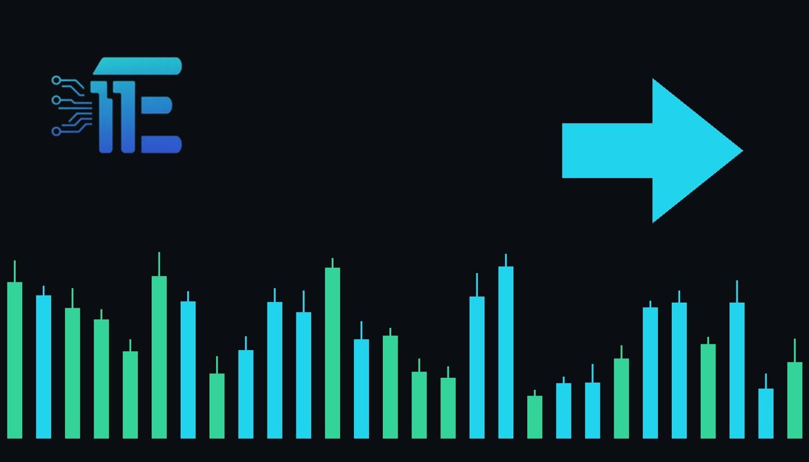

S&P 500 Enters Correction as Sell-Off Stirs Market CautionS&P 500 ធ្លាក់ចូលដំណាក់កាល Correction ខណៈការលក់ចេញបង្កការប្រុងប្រយ័ត្នលើទីផ្សារ
XAU/USD impact: ◆ Mixedផលប៉ះពាល់លើ XAU/USD: ◆ ចម្រុះ

A sharp November sell-off has pushed the S&P 500 into correction territory, though history suggests bear markets do not automatically follow. For gold traders, broad stock market distress can reshape safe-haven demand and sway interest rate expectations.
ការលក់ចេញយ៉ាងខ្លាំងក្នុងខែ November បានរុញច្រានសន្ទស្សន៍ S&P 500 ឱ្យធ្លាក់ចូលទៅក្នុងដំណាក់កាល Correction បើទោះបីជាប្រវត្តិសាស្ត្របង្ហាញថា វាមិនប្រាកដជាឈានទៅរកទីផ្សារធ្លាក់ចុះ Bear Market ជានិច្ចនោះទេ។ សម្រាប់អ្នកជួញដូរមាស ភាពរង្គោះរង្គើនៃទីផ្សារភាគហ៊ុនអាចផ្លាស់ប្តូរតម្រូវការទ្រព្យសុវត្ថិភាព និងជះឥទ្ធិពលលើការរំពឹងទុកអត្រាការប្រាក់។
A notable November sell-off across equity markets has officially driven the S&P 500 index into a correction. While the downturn has stirred concern among investors, historical records show that entering correction territory does not necessarily mean the market will plunge into a protracted bear market or that the wider economy will enter a recession.
ការលក់ចេញយ៉ាងកត់សម្គាល់នៅទូទាំងទីផ្សារភាគហ៊ុនក្នុងខែ November បានរុញច្រានសន្ទស្សន៍ S&P 500 ឱ្យធ្លាក់ចូលទៅក្នុងដំណាក់កាលកែតម្រូវ Correction ជាផ្លូវការ។ ខណៈពេលដែលការធ្លាក់ចុះនេះបានបង្កឱ្យមានការព្រួយបារម្ភក្នុងចំណោមវិនិយោគិន កំណត់ត្រាប្រវត្តិសាស្ត្របង្ហាញថា ការឈានចូលដល់ដំណាក់កាល Correction មិនប្រាកដថាទីផ្សារនឹងធ្លាក់ចូលទៅក្នុងវិបត្តិ Bear Market អូសបន្លាយ ឬសេដ្ឋកិច្ចទូទៅនឹងធ្លាក់ចូលទៅក្នុងវិបត្តិសេដ្ឋកិច្ចនោះឡើយ។
For gold (XAU/USD), sudden equity drawdowns create a direct transmission channel through shifting risk sentiment and liquidity requirements. When major benchmark equities stumble, investors often evaluate capital preservation strategies. Heightened equity market instability can direct flight-to-safety flows into precious metals, while simultaneously influencing demand for the US dollar and sovereign debt securities.
សម្រាប់មាស (XAU/USD) ការដកថយភ្លាមៗនៃភាគហ៊ុនបង្កើតជាច្រកបញ្ជូនឥទ្ធិពលដោយផ្ទាល់ តាមរយៈការប្រែប្រួលនៃអារម្មណ៍ហានិភ័យ និងតម្រូវការសាច់ប្រាក់ងាយស្រួល។ នៅពេលដែលសន្ទស្សន៍ភាគហ៊ុនគោលជួបប្រទះការដួលរុះរោយ វិនិយោគិនតែងតែវាយតម្លៃឡើងវិញនូវយុទ្ធសាស្ត្រការពារដើមទុន។ អស្ថិរភាពកាន់តែខ្លាំងនៅលើទីផ្សារភាគហ៊ុន អាចទាក់ទាញលំហូរទុនស្វែងរកសុវត្ថិភាពចូលទៅក្នុងលោហធាតុមានតម្លៃ ខណៈពេលដែលវាជះឥទ្ធិពលក្នុងពេលដំណាលគ្នាទៅលើតម្រូវការដុល្លារអាមេរិក និងបណ្ណបំណុលរដ្ឋាភិបាល។
A sustained bout of equity stress presents a dual dynamic for bullion. If the sell-off deepens and sparks broader anxieties about macroeconomic stability, gold typically draws sustained support from safe-haven demand, particularly if softening sentiment pulls bond yields lower. On the other hand, if historical patterns prevail and the correction proves to be an isolated dip without turning into a recession, investor confidence could rebound quickly. In that scenario, stabilizing equity markets and reduced risk aversion would likely exert downward pressure on gold.
ភាពតានតឹងនៃទីផ្សារភាគហ៊ុនដែលអូសបន្លាយ បង្ហាញពីទិដ្ឋភាពពីរផ្លូវសម្រាប់តម្លៃមាស។ ប្រសិនបើការលក់ចេញកាន់តែស៊ីជម្រៅ ហើយបង្កឱ្យមានការព្រួយបារម្ភកាន់តែទូលំទូលាយអំពីស្ថិរភាពម៉ាក្រូសេដ្ឋកិច្ច មាសជាទូទៅទទួលបានការគាំទ្រយ៉ាងរឹងមាំពីតម្រូវការទ្រព្យសុវត្ថិភាព ជាពិសេសប្រសិនបើអារម្មណ៍ប្រុងប្រយ័ត្នទាញទិន្នផលបណ្ណបំណុលឱ្យធ្លាក់ចុះ។ ផ្ទុយទៅវិញ ប្រសិនបើទម្រង់ប្រវត្តិសាស្ត្រកើតឡើងដដែល ហើយការកែតម្រូវនេះគ្រាន់តែជាការធ្លាក់ចុះបណ្តោះអាសន្នដោយមិនប្រែក្លាយទៅជាវិបត្តិសេដ្ឋកិច្ច ឬ Bear Market នោះ ទំនុកចិត្តវិនិយោគិនអាចងើបឡើងវិញយ៉ាងឆាប់រហ័ស។ ក្នុងករណីនោះ ទីផ្សារភាគហ៊ុនដែលមានស្ថិរភាពឡើងវិញ និងការថយចុះនៃការភ័យខ្លាចហានិភ័យ ទំនងជានឹងដាក់សម្ពាធធ្លាក់ចុះលើតម្លៃមាស។
In the sessions ahead, precious metal traders should pay close attention to whether the S&P 500 finds solid footing or continues to experience selling pressure. In addition, observing how currency markets react is essential, as sharp shifts in the US dollar and fluctuations in bond yields during equity turmoil will remain central in determining gold's near-term path.
នៅក្នុងវគ្គជួញដូរខាងមុខ អ្នកជួញដូរលោហធាតុមានតម្លៃគួរតែតាមដានយ៉ាងយកចិត្តទុកដាក់ថាតើ S&P 500 រកឃើញជំហររឹងមាំឡើងវិញ ឬបន្តប្រឈមនឹងសម្ពាធនៃការលក់ចេញ។ លើសពីនេះ ការសង្កេតមើលរបៀបដែលទីផ្សាររូបិយប័ណ្ណឆ្លើយតបគឺជារឿងសំខាន់ ព្រោះការប្រែប្រួលខ្លាំងនៃដុល្លារអាមេរិក និងការឡើងចុះនៃទិន្នផលបណ្ណបំណុល អំឡុងពេលមានភាពចលាចលលើទីផ្សារភាគហ៊ុន នឹងនៅតែជាកត្តាស្នូលក្នុងការកំណត់ទិសដៅរយៈពេលខ្លីរបស់មាស។
Key takeawaysចំណុចសំខាន់ៗ
- The S&P 500 has entered a correction following a November market sell-off.
- សន្ទស្សន៍ S&P 500 បានធ្លាក់ចូលក្នុងដំណាក់កាល Correction បន្ទាប់ពីមានការលក់ចេញក្នុងខែ November។
- Historical data reveals corrections do not always result in recessions or bear markets.
- ទិន្នន័យប្រវត្តិសាស្ត្របង្ហាញថា ការកែតម្រូវ Correction មិនប្រាកដជាបង្កឱ្យមានវិបត្តិសេដ្ឋកិច្ច ឬ Bear Market នោះទេ។
- Equity instability affects gold through safe-haven demand, yields, and the US dollar.
- អស្ថិរភាពភាគហ៊ុនជះឥទ្ធិពលលើមាសតាមរយៈតម្រូវការទ្រព្យសុវត្ថិភាព ទិន្នផលបណ្ណបំណុល និងដុល្លារអាមេរិក។
Original commentary by THE MARKET CODE, based on public reporting from Finance. Written with the help of AI. Educational only, not financial advice.
មតិវិភាគដើមដោយ THE MARKET CODE ផ្អែកលើការរាយការណ៍សាធារណៈពី Finance។ សរសេរដោយមានជំនួយពី AI។ មាតិកាអប់រំប៉ុណ្ណោះ មិនមែនជាដំបូន្មានហិរញ្ញវត្ថុទេ។